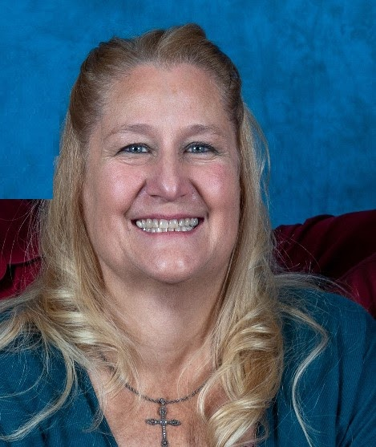
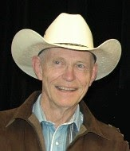
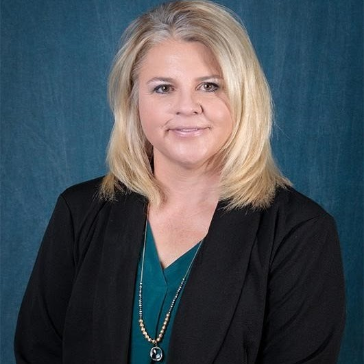
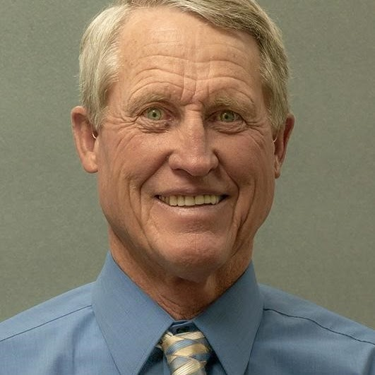

Alamosa County Republican Central Committee officers.

Chairman
(719) 588-0121
Vice Chair
(303) 898-7382

Secretary
(719) 588-5011
Treasurer
(828) 273-5288
For Colorado Republican Party information, leadership, and resources:
Visit Colorado GOP →Alamosa County has 9 elected officials. Republicans currently hold the Board of County Commissioners (all 3 seats), Treasurer, Assessor, and Coroner positions.
District 1 Commissioner
District 2 Commissioner
District 3 Commissioner

Treasurer & Public Trustee
County Clerk & Recorder

Surveyor
Coroner
Alamosa County sits in Colorado House District 6 and Congressional District 35.
Colorado State Senator — District 6
Colorado has 2 U.S. Senators and 7 Congressional districts. Alamosa County is in Congressional District 3.
We&rsquore always looking for committed conservatives to serve in leadership roles.